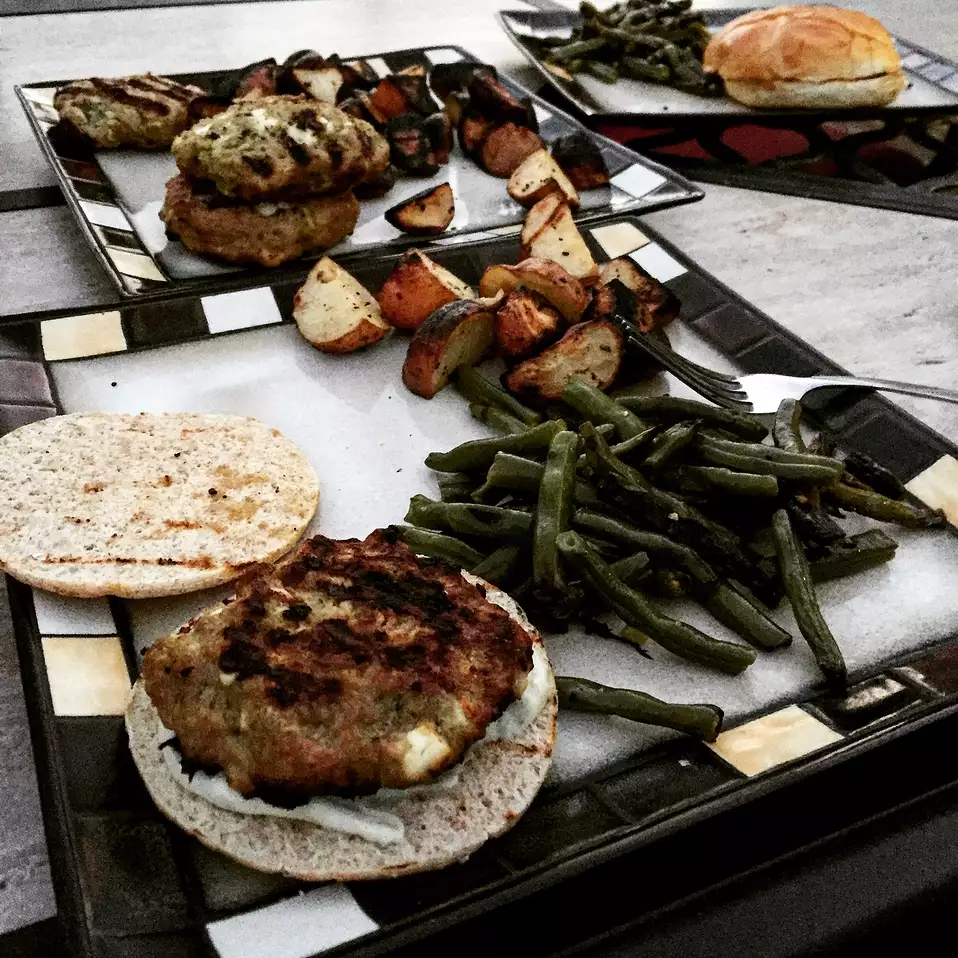

Pesto Turkey Burger

Description
A homemade turkey burger with garlic, pesto, feta cheese, and seasoned salt
- 1.25lbs of lean ground turkey
- 2 tablespoons basil pesto
- 1 teaspoon minced garlic
- 1/2 cup of crumbled feta cheese
- 1.5 teaspoons of seasoned salt
- 1/2 cup bread crumbs
- Preheat grill for medium-high heat.
- Mix together ground turket, pesto, garlic, feta cheese, 1.5 teaspoons of seasoned salt, and breadcrumbs until evenly blended. Form into 4 patties
- Grill pesto burgers until no longer pink in center. Sprinkle with salt halfway through cooking.